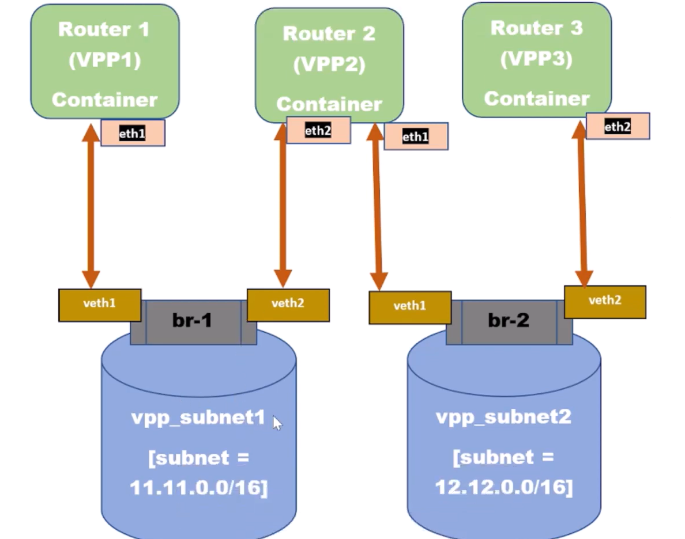

3. frrdocker-dockervpp
date: 2023-02-05
VM: 10.1.5.153

docker pull frrdocker/dockervpp:vpp1
docker run --privileged --name VPP1 --cap-add=NET_ADMIN --cap-add=SYS_ADMIN --rm -it frrdocker/dockervpp:vpp1
vpp -c /etc/vpp/startup.conf &
docker run --privileged --name VPP2 --cap-add=NET_ADMIN --cap-add=SYS_ADMIN --rm -it frrdocker/dockervpp:vpp1
vpp -c /etc/vpp/startup.conf &
docker run --privileged --name VPP3 --cap-add=NET_ADMIN --cap-add=SYS_ADMIN --rm -it frrdocker/dockervpp:vpp1
vpp -c /etc/vpp/startup.conf &

vi 04-docker-network-remove-default.sh
#! bi/bash
VPP1=$(docker exec -it VPP1 bash -c hostname | tr -d '\r\n')
VPP2=$(docker exec -it VPP2 bash -c hostname | tr -d '\r\n')
VPP3=$(docker exec -it VPP3 bash -c hostname | tr -d '\r\n')
echo $VPP1
echo $VPP2
echo $VPP3
### Disconnect VPP1 from default bridge docker0
docker network disconnect bridge $VPP1
### Disconnect VPP2 from default bridge docker0
docker network disconnect bridge $VPP2
### Disconnect VPP3 from default bridge docker0
docker network disconnect bridge $VPP3
bash -xv 04-docker-network-remove-default.sh
docker network create --driver=bridge --subnet=11.11.0.0/16 vpp_subnet1
docker network create --driver=bridge --subnet=12.12.0.0/16 vpp_subnet2


#! bi/bash
VPP1=$(docker exec -it VPP1 bash -c hostname | tr -d '\r\n')
VPP2=$(docker exec -it VPP2 bash -c hostname | tr -d '\r\n')
VPP3=$(docker exec -it VPP3 bash -c hostname | tr -d '\r\n')
echo $VPP1
echo $VPP2
echo $VPP3
### Connect vpp_subnet1 to VPP1 and VPP2
docker network connect vpp_subnet1 $VPP1
docker network connect vpp_subnet1 $VPP2
### Connect vpp_subnet2 to VPP2 and VPP3
docker network connect vpp_subnet2 $VPP2
docker network connect vpp_subnet2 $VPP3
# VPP1
ifconfig eth1 0.0.0.0
vppctl
create host-interface name eth1
show int
set interface state host-eth1 up
set interface ip address host-eth1 11.11.0.11/16
show int addr
ip route add 12.12.0.0/16 via 11.11.0.12
# VPP2
ifconfig eth1 0.0.0.0
ifconfig eth2 0.0.0.0
vppctl
create host-interface name eth1
create host-interface name eth2
set interface state host-eth1 up
set interface state host-eth2 up
set interface ip address host-eth1 11.11.0.12/16
set interface ip address host-eth1 12.12.0.21/16
# VPP3
ifconfig eth1 0.0.0.0
vppctl
create host-interface name eth1
set interface state host-eth1 up
set interface ip address host-eth1 12.12.0.22/16
ip route add 11.11.0.0/16 via 12.12.0.21